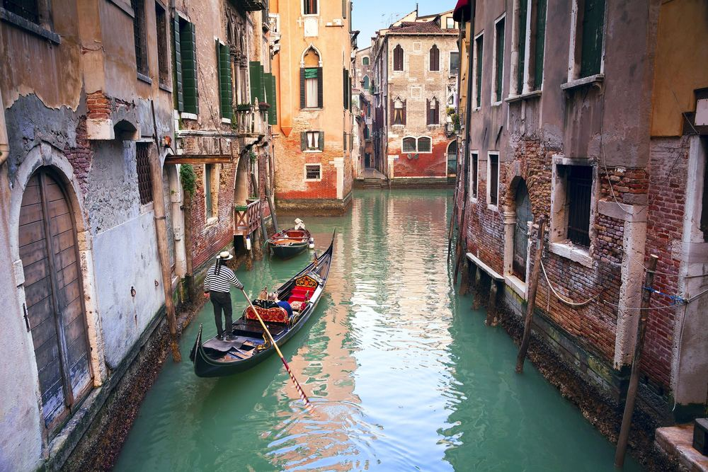

2026 · 9/19–9/29
Italy Trip
把“怎么走”和“为什么值得看”分开：一个页面负责当天决策，五个城市页面负责历史、人文、建筑与现场观察。
Rome · Florence · Pisa · Venice · Milan按城市阅读
每个城市单独一页，内容只围绕这次会经过的区域，不再给行程增加负担。
关于书内图片：这些页面使用你提供的《Lonely Planet Italy》中的低分辨率缩略图，仅作为个人旅行笔记。若 GitHub Pages 仓库公开发布，请确认图片使用授权；最稳妥的做法是把仓库设为私有/限制访问，或之后替换为你自己拍的照片。